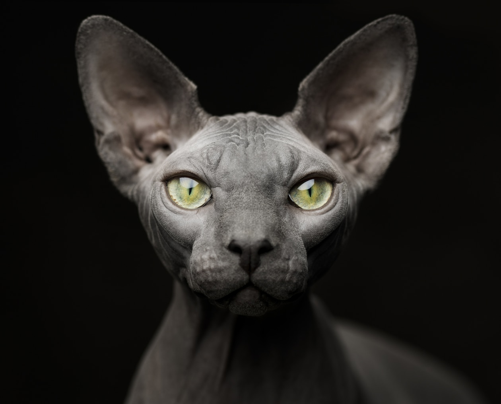
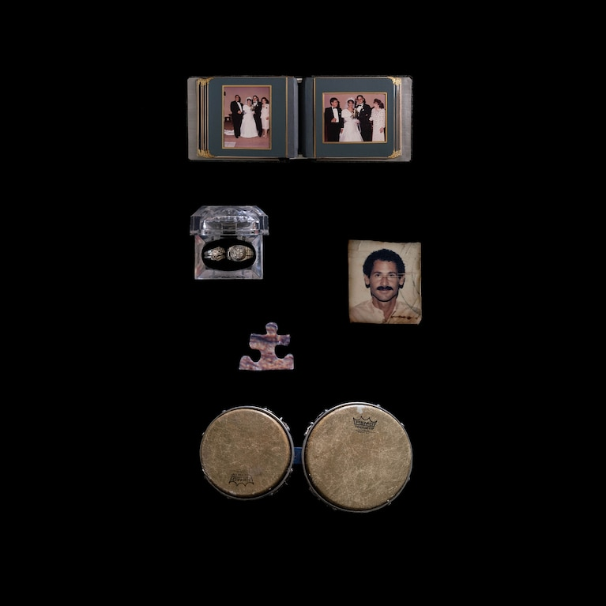
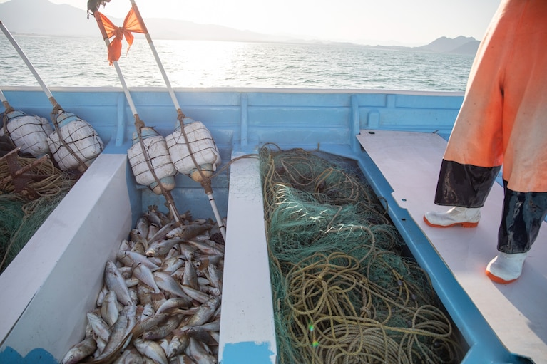
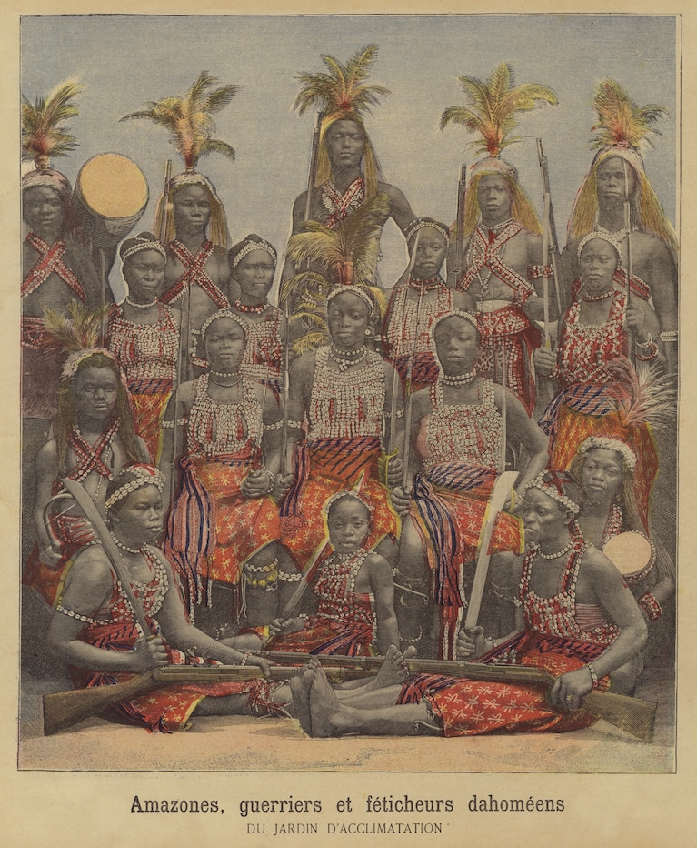
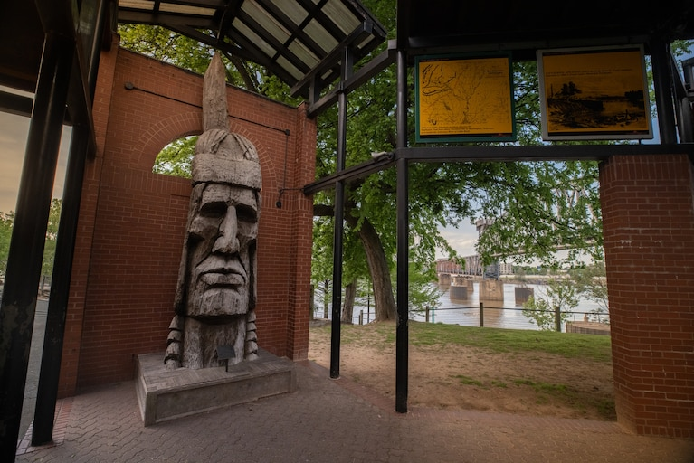
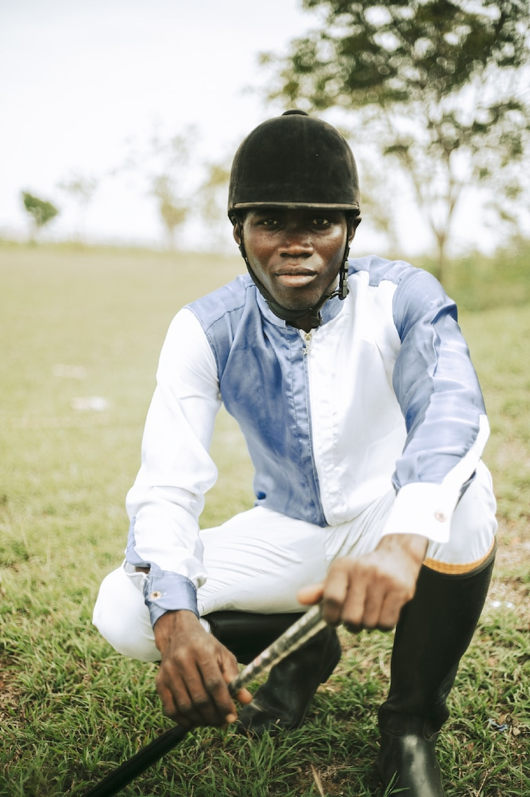

magazine
what are anmals thinking?
read

megazine From the editor
Why we set out to uncover the mysteries of animals mids
Read

How these Two photographers got insed the minds of animal
Read

‘Like a dystopian novel’: Puerto Rico still mourns, five years after María
Read

The high-stakes quest to save a behemoth, croaking fish
Read

The warriors of this West African kingdom were formidable—and female
Read

At the crossroads of the Trail of Tears, Little Rock reckons with its history
Read

Marine heat waves are on the rise. What are these blobs of hot water?
Read

Ghana's jockeys cherish their horses—and their traditions
Read
Today Picks
History & Culture
Like a dystopian novel: puerto Rico still mourns, five years after maria